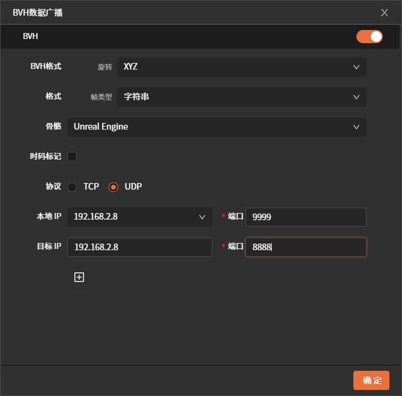
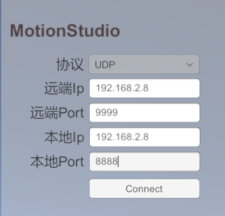
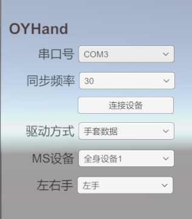
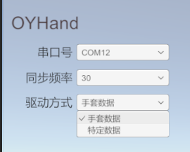
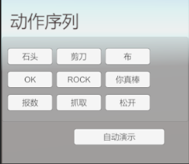

傲意灵巧手
魔迅手套+傲意灵巧手使用文档
概述
使用该软件可以通过网络传输接收并驱动MotionStudio中手套的动捕数据，进而使用该数据驱动傲意灵巧手。
傲意灵巧手资料
产品文档
请至钉钉文档查看附件《OHandSetting使用手册-V1.4.pdf》
协议文档
请至钉钉文档查看附件《OHandSerialProtocol_CN.md》
CH340驱动
如果机械手插入电脑后设备管理器中的端口(COM和LPT)不显示此设备，可能是缺少驱动
请至钉钉文档查看附件《CH34x_Install_Windows_v3_4.zip》
图形化软件
软件下载及使用
软件下载
+---------------------------------------------------------------------------------------------------------------------------------------------------------------------------+------------------+---------------------------------------------+ | APP | 日期 | 更新说明 | +===========================================================================================================================================================================+:================:+=============================================+ | 请至钉钉文档查看附件《OYDexterousHand_V2.0.0.rar》 | 2025-10-28 | 1.适配右手灵巧手 | | | | | | | | 2.支持多MS设备 | | | | | | | | 3.支持多魔迅设备驱动多个灵巧手 | | | | | | | | 4.支持一个魔迅设备驱动多个灵巧手 | | | | | | | | 5.支持UDP通信 | | | | | | | | 6.优化rock手势 | +---------------------------------------------------------------------------------------------------------------------------------------------------------------------------+------------------+---------------------------------------------+ | 请至钉钉文档查看附件《OYDexterousHand_V1.1.0.rar》 | 2025-09-22 | 1. 支持驱动特定动作，例如:石头、剪刀、布等 | | | | | | | | 2. 支持演示模式 | +---------------------------------------------------------------------------------------------------------------------------------------------------------------------------+------------------+---------------------------------------------+ | 请至钉钉文档查看附件《OYDexterousHand_V1.0.0.rar》 | 2025-09-17 | 支持魔迅手套驱动傲意灵巧手(左手) | +---------------------------------------------------------------------------------------------------------------------------------------------------------------------------+------------------+---------------------------------------------+
软件使用
1.连接MotionStudio
-
MotionStudio开启数据广播并进行相关配置
-
该软件输入MotionStudio中配置ip和端口然后进行连接(只支持udp协议)
注意:MotionStudio和该软件需要在同一局域网内，各个ip和port不要填错
{width="2.4895833333333335in" height="2.4479166666666665in"}
{width="2.4895833333333335in" height="2.3958333333333335in"}
2.连接傲意灵巧手
选择灵巧手对应的串口号然后连接设备。如果有多个串口号不知道哪个对应灵巧手，
可以拔插下设备看哪个串口号消失又出现
同步频率：频率越高灵巧手越容易过热
注意:使用手套时别忘记做磁校准，不然对拇指效果影响比较大
{width="3.3020833333333335in" height="3.7708333333333335in"}
3.驱动模式切换
现支持两种方式驱动灵巧手
方式一：使用手套驱动(实时数据)
方式二：使用特定数据驱动(离线数据)
当切换为特定数据模式后支持石头、剪刀、布等动作
{width="2.2291666666666665in" height="1.7916666666666667in"}{width="2.0729166666666665in" height="1.7916666666666667in"}
效果演示
魔迅手套数据驱动灵巧手
特定动作数据驱动灵巧手